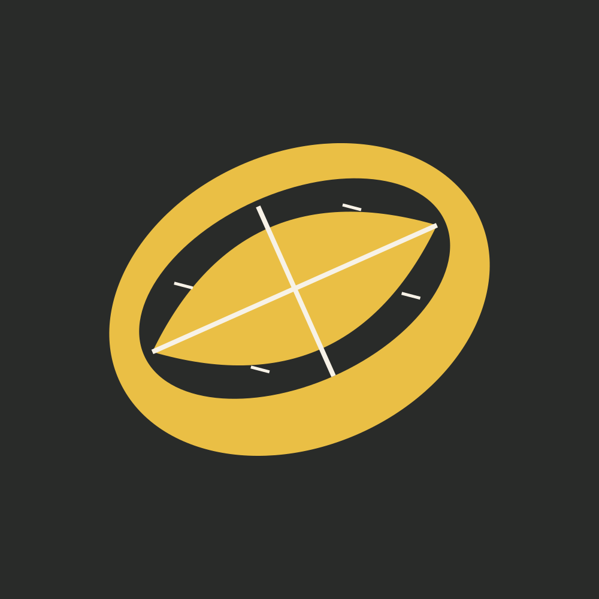

JACKET POTATO / KUMAMOTO熊本・上乃裏INDEPENDENT DESIGN PROPOSAL
芋男爵熊本・上乃裏CAFE & EVERYDAY
ABOUT THE PLACE
上乃裏で、 お芋の食事を。
熊本市中央区草葉町、コアスクエア上乃裏2階の「芋男爵」。紹介記事では、ジャケットポテトの専門店として案内されています。
公開情報に基づく紹介です。紹介の出典

A LITTLE DISCOVERY
お芋の食事を、楽しむ。
公開記事で紹介されている内容から、お店を知る小さな手がかりを。
-
ジャケットポテト
取材記事で紹介されている、お店のメニュー。
-
塩男爵
記事に掲載されているメニュー名です。
-
明太マヨバター男爵
こちらも取材記事に掲載。現在の提供内容はお店の案内をご確認ください。
掲載内容は出典の掲載時点の情報です。現在の提供内容・価格・営業状況を保証するものではありません。
- 所在地
- 熊本県熊本市中央区草葉町4-1 コアスクエア上乃裏 2F
- 営業時間
- 最新の営業日・営業時間は、お店の案内をご確認ください。
- 案内
- お店のInstagram
地図は店名・住所の検索リンクです。正確な入口や臨時休業などは、訪問前にご確認ください。